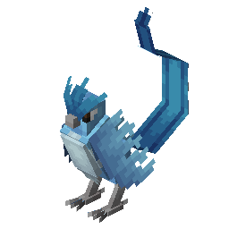

Рідкісні Покемони
Легендарний

Articuno
Крижаний птах правосуддя. З'являється у найхолодніших сніжних біомах під час хуртовини.
Легендарний

Raikou
Втілення грому. Він мчить світом настільки швидко, що його появу можна помітити лише за спалахами блискавок.
Легендарний
Groudon
Володар землі. У Cobblemon його можна зустріти в глибоких печерах або поблизу розпеченої лави.
Міфічний
Mew
Має генетичний код усіх покемонів. Його надзвичайно важко знайти, він часто ховається в джунглях.
Міфічний
Celebi
Охоронець лісу, здатний подорожувати в часі. Шукайте його біля святинь у густих лісах.
Міфічний
Jirachi
Покемон бажань. Кажуть, він прокидається раз на тисячу років, якщо йому заспівати чисту пісню.